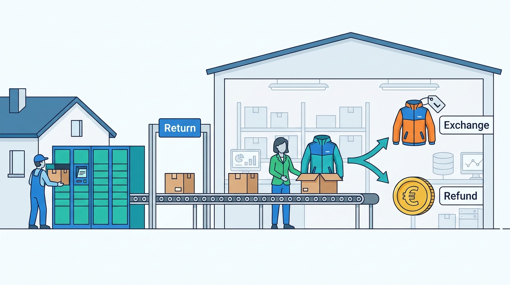

Part IX — JOURNEYS: One Order, End to End
Journey 2: The Jacket Comes Back
AI-assisted: researched and written with Claude Code, images generated with the Gemini API. How this works

Part IX — JOURNEYS: One Order, End to End
AI-assisted: researched and written with Claude Code, images generated with the Gemini API. How this works
